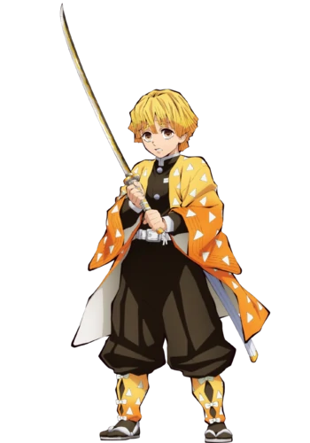

I hate myself more than anyone. I always think I have to get my act together, but I end up cowering, running away, sniveling. I want to change. I want to be a competent person. ” — Zenitsu Agatsuma's desire to change for the better in
